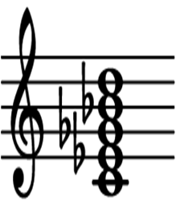
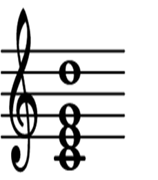
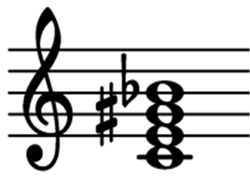

A gitárakkordok formailag
Akkordhang<m>módosító vagy Akkordhang<m>módosító/Basszushang
alakúak lehetnek. Az Akkordhang (az akkord alaphangja) és a Basszushang (az akkord alaphangjától eltérő hang a basszus számára) az alábbiak egyike lehet (emelkedő hangrendben): Ces, C, Cis, Des, D, Dis, Es, E, Eis, Fes, F, Fis, Ges, G, Gis, As, A, Ais, B, H, His. Az m a moll akkord jelölője, ilyenkor az Akkordhang kisbetűs. Ha nincs semmilyen módosító, az a "normál" dúr hármashangzatot jelöli. A lehetséges m és módosító kombinációkat az alábbi táblázat foglalja össze (példaképpen a C-dúr akkord módozataira). Az első oszlop a Diatárban megjelenő akkord formátum, a második a hangzat kottaképe, a harmadik pedig rövid megnevezése (nem feltétlenül az akkordok szabályos meghatározása, inkább tájékoztató jellegű leírásuk).
| akkord |
kotta |
megnevezés |
akkord |
kotta |
megnevezés |
|
| C |
|
dúr |
cm7+/9 |
|
moll nagy szeptim nona |
|
| cm |
|
moll |
C7+/9+ |
|
nagy szeptim nagy nona |
|
| C+ |
|
bővített |
C+/7+/9 |
|
bő nagy szeptim nona |
|
| Co |
|
szűkített |
C+/7+/9+ |
|
bő nagy szeptim nagy nona |
|
| C7 |
|
szeptim |
Co/7/9 |
 |
szűk nona |
|
| C7+ |
|
nagy szeptim |
Co/7/9- |
|
szűk kis nona |
|
| cm7 |
|
moll szeptim |
C9 |
 |
hiányos nona |
|
| cm7+ |
|
moll nagy szeptim |
cm9 |
|
hiányos moll nona |
|
| Co/7 |
|
szűkített szeptim |
C9- |
|
hiányos kis nona |
|
| Co/7- |
|
szűkített négyeshangzat |
cm9- |
|
hiányos moll kis nona |
|
| Co/7+ |
|
szűkített nagy szeptim |
C9+ |
|
hiányos nagy nona |
|
| C+/7 |
 |
bővített szeptim |
C+/9 |
|
hiányos bő nona |
|
| C+/7+ |
|
bővített nagy szeptim |
C+/9+ |
|
hiányos bő nagy nona |
|
| C6 |
|
szext |
Co/9 |
|
hiányos szűk nona |
|
| cm6 |
|
moll szext |
Co/9- |
|
hiányos szűk kis nona |
|
| C7/9 |
|
nona |
C4 |
|
kvart késleltetés (suspend) |
|
| cm7/9 |
|
moll nona |
C2 |
|
szekund késleltetés |
|
| C7/9- |
|
kis nona |
C4/7 |
|
kvart késleltetés szeptimmel |
|
| cm7/9- |
|
moll kis nona |
C2/7 |
|
szekund késleltetés szeptimmel |
|
| C7/9+ |
|
nagy nona |
C4/9 |
|
kvart késleltetés nonával |
|
| C+/7/9 |
|
bő nona |
C4/9- |
|
kvart késleltetés kis nonával |
|
| C+/7/9+ |
|
bő nagy nona |
C4/9+ |
|
kvart késleltetés nagy nonával |
|
| C7+/9 |
|
nagy szeptim nona |